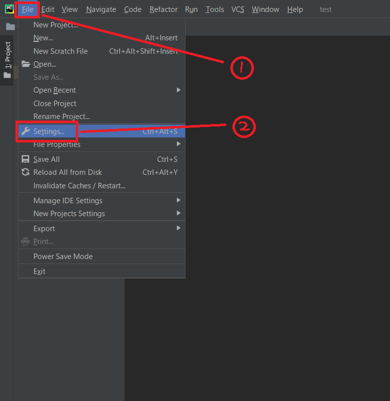
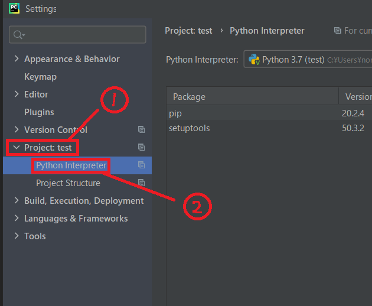
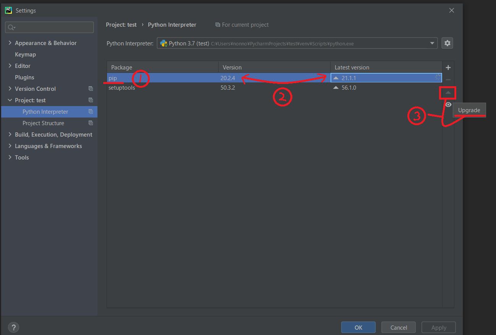
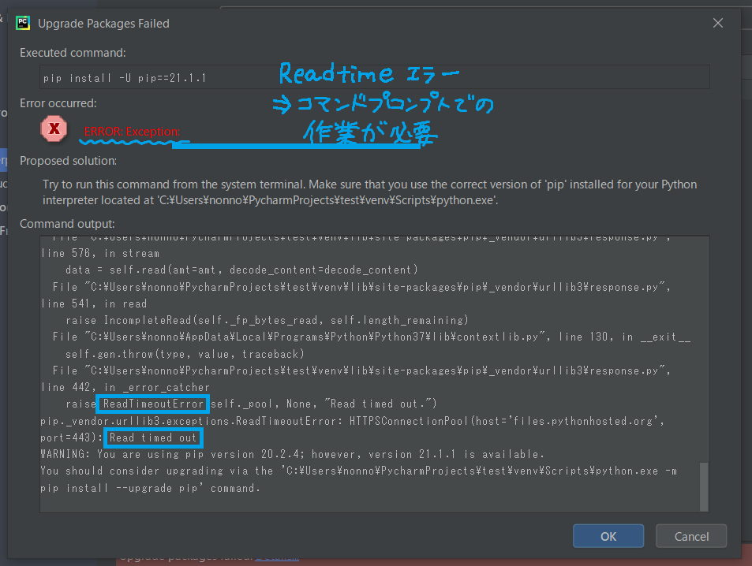
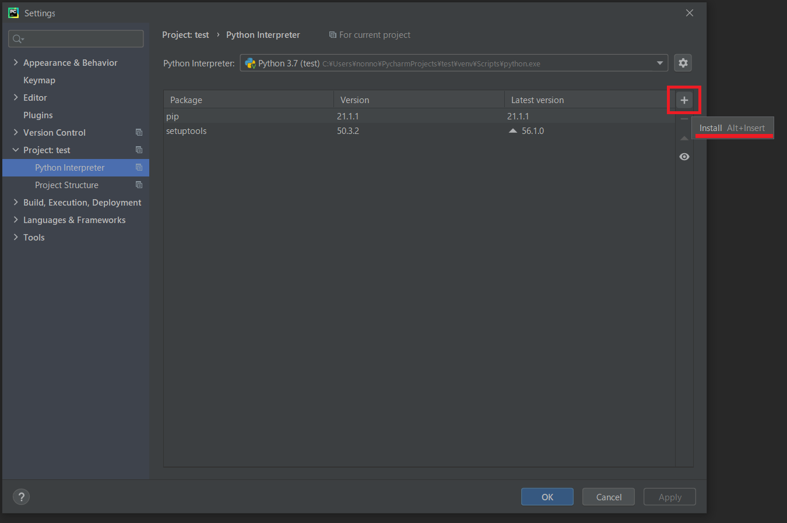
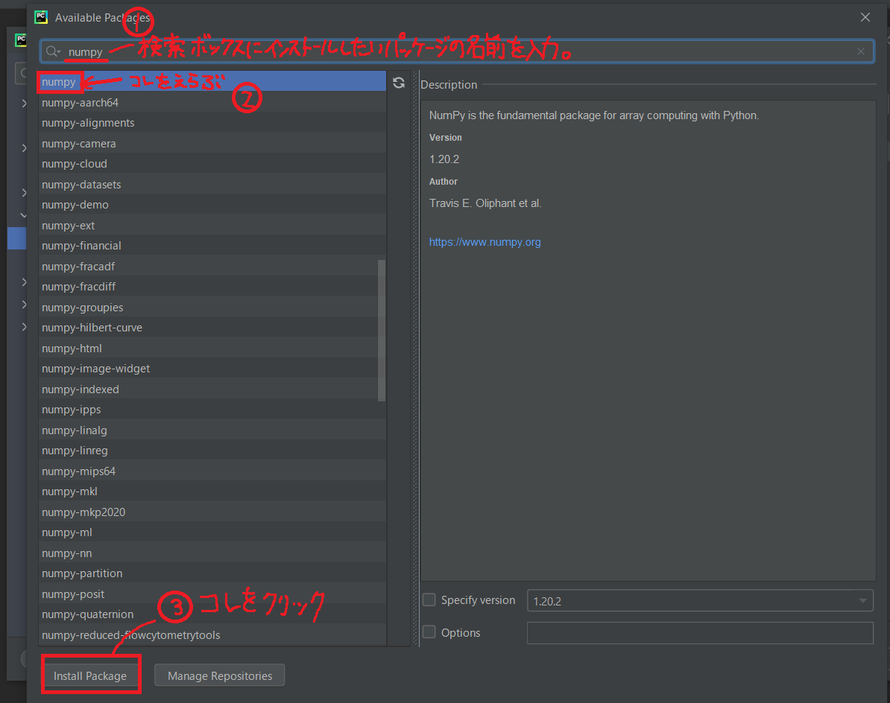
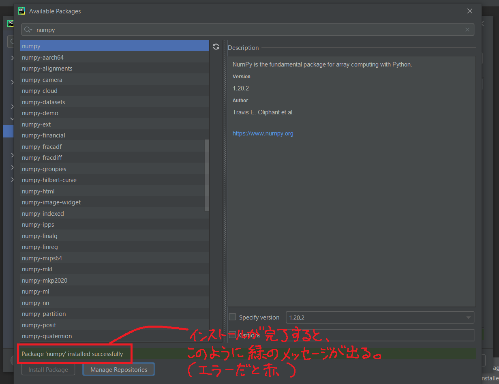
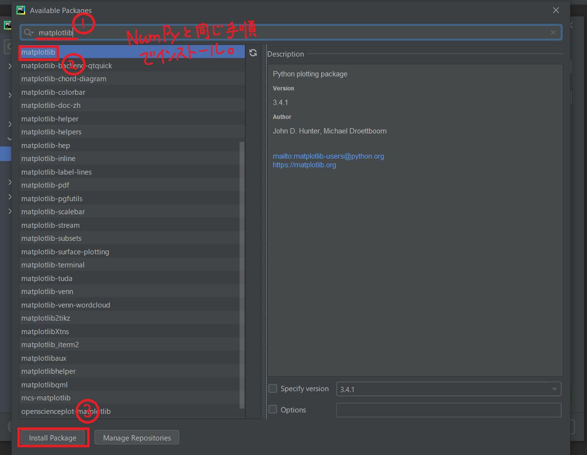
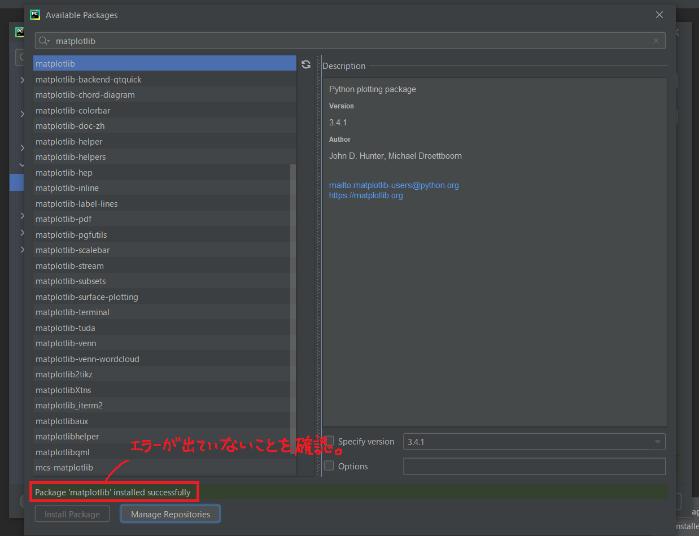

NumPy＆Matplotlibの導入(2021/05/06)
●pipの更新
pipとは、公式や外部から配布されるパッケージを管理するツールのこと。
NumPyやMatplotlibをインストールする前に、これを最新版にアップデートしておく。
①Pycharmを起動して設定画面を開く
私の場合、過去の授業においてPycharmの導入を済ませているため、Pycharm上でpipの更新を行う。
Pycharmが起動したら、「File」→「Settings」の順番でクリックし、設定ウィンドウを開く。

②pipの設定場所を開く
左側のバーから「Project ○○」→「Python Interpreter」と順番に開く。
右側にpipの更新やパッケージのインストールが行える画面が開く。

②pipの最新版に更新する
先ほど開いた画面から「pip」を選択、自分が使っているpipのバージョンと最新版を見比べて、最新版になっていなければ更新する。
更新は、ウィンドウ右側の△マークをダブルクリックで開始する。

※pipの更新でTimeoutエラーが出た場合
pipの更新でエラーが発生した場合、詳細画面を開くと下記画像のようなエラーの詳細が分かる画面を見ることが出来る。
この画面から、Timeout関連のエラーであることが読み取れる場合は、(私が使用しているOSはWindowsのため)コマンドプロンプトでの作業が必要。

コマンドプロンプトを開き、
python -m pip --default-timeout=100 install -U pip
と入力する。
「--default-timeout=100」の部分でインストールがタイムアウトさせられるまでの時間を指定できるので、自分のインストールに要する時間に十分に足りるように100の部分の数値を調節するとよい。
●NumPyとMatplotlibをインストールする
NumPyは数値計算を効率化・高速化することが可能なライブラリ。
Matplotlibはグラフ描写によって計算結果の視覚化を可能にするライブラリ。
それぞれ、作業を効率化したり途中の状況を分かりやすくすることを助けてくれるため採用。
pipの更新の際も開いたインタープリターの画面で、今回は△マークではなく＋マークをクリックし、パッケージの追加画面に移行。

下記の画像にしたがってNumPyとMatplotlibをそれぞれインストール完了させる。
○NumPy


○Matplotlib


本日の投稿はここまで。ありがとうございました。